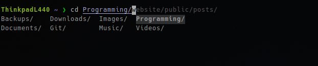

Home, Archive, Videos, Links, Contact

Fish shell is a command-line shell mostly written in the Rust programming language for Unix-related systems that aims to be user-friendly. The reason I have chosen to try fishing is because I like some of the features it comes with!
Fish aims to be a smart, user-friendly command line shell
My favourite feature of the fish shell is that it has built-in tab completion, meaning it gives you options for the command you are inputting into the terminal. This also remembers the last time you typed in a command, so when I am sshing into a server, it makes it so much easier!

I also like the fact that all of the features listed above come out of the box! The only configuration I have had to do is set my aliases and make the Starship program work. I do know there are plugins that I do need to take a look at, but for now, I do not see any need for any since I am happy with what they come with!
Overall, I am rather impressed by fish. I will use it as my main shell for the time being, but if I do have any problems, I can just switch to Bash shell for the duration of that problem. I know there is probably a bunch I have missed out on Fish shell, but so far it has been smooth and I have nothing but good to say about it!
Thank you for reading.